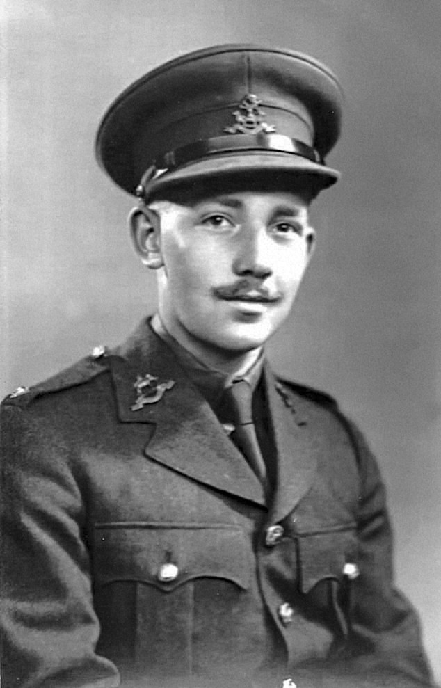

A Tribute to Captain Sir Tom Moore
Philanthropist, Soldier and Hero


The prime minister described him as “a hero in the truest sense of the word”. He said: “In the dark days of the second world war he fought for freedom and in the face of this country’s deepest postwar crisis he united us as well, he cheered us all up and he embodied the triumph of the human spirit.”
Click here for more information of the life of Captain Tom Moore
Johnson added: “He became not just a national inspiration but a beacon of hope for the world.”
The Queen was sending a private message of condolence, Buckingham Palace said. A spokesperson added: “Her Majesty very much enjoyed meeting Capt Sir Tom and his family at Windsor last year.
“Her thoughts, and those of the royal family, are with them, recognising the inspiration he provided for the whole nation and others across the world.”